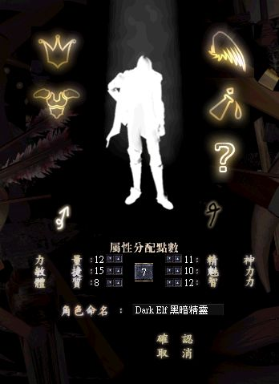

|
2003年4月16日
新職業圖像！？
韓國測試伺服器今天更新了四幅圖像，如下：
這些圖像很明顯是在創立角色時顯示，大家能否憑著人物的輪廓而看出新職業是甚麼呢？
另外在物件控制檔中，加入了以下的新NPC，相信他們與最新的任務（45級之後的任務）有關：
球狀閃電(ball lightning)
鬼火(will o Wisp)
瘋狂免子(crazy rabbit)
四元素精靈首領(spirit of water/fire/earth/wind boss)
受魔化了的高侖(diagolem)
除此以外，城門的表現方式也有更改，相信在未來官方會改變一些城門的顯示或設定。
以下為創立新職業時的設計圖片，點數分配資料來自用戶端的數據，它有可能會再度更改。（我們暫時估計新職業為黑暗精靈（黑暗妖精），與目前的妖精比較黑暗精靈的體質明顯較低，但敏捷較高）
 |